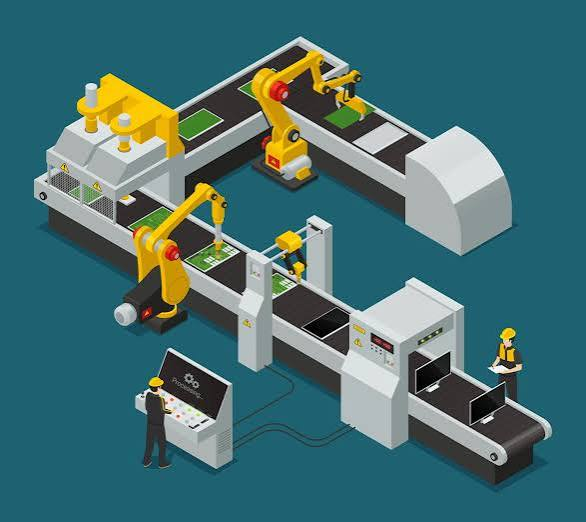
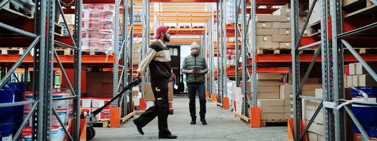
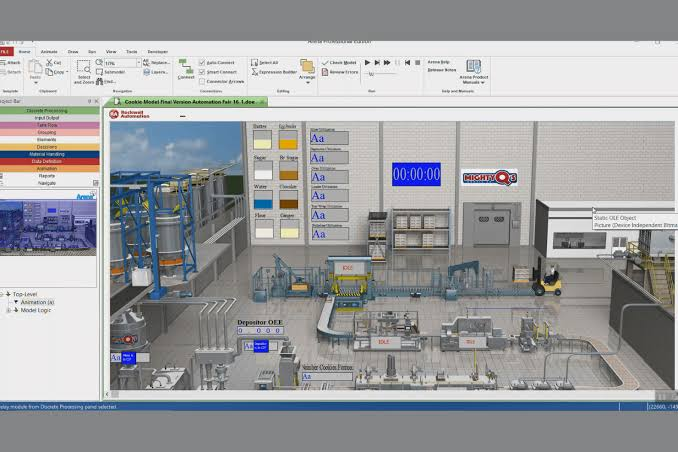

Optimización de Línea de Producción
Reingeniería de procesos y estudio de tiempos en plantas de manufactura para reducir cuellos de botella y maximizar la eficiencia.

Reingeniería de procesos y estudio de tiempos en plantas de manufactura para reducir cuellos de botella y maximizar la eficiencia.

Implementación de modelos de inventario justo a tiempo (JIT) para minimizar costos de almacenamiento y distribución.
Evaluación y rediseño de puestos de trabajo mediante el método REBA para disminuir riesgos laborales y ausentismo.

Modelado estocástico de líneas de servicio y manufactura para evaluar escenarios de mejora operativa antes de su implementación.